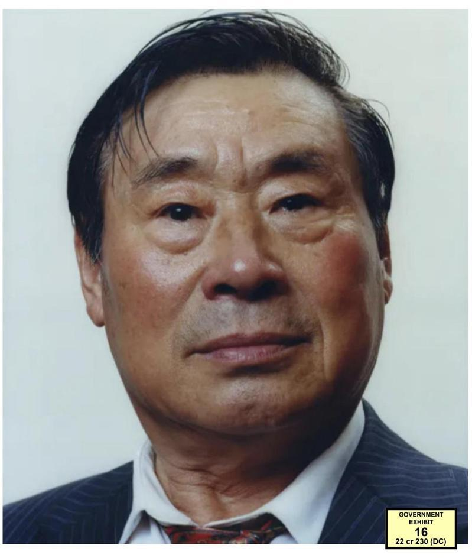

长期活跃于美东民运组织的王书君被控充当中国代理人案，历经一周庭审后，纽约联邦东区法院陪审团6日裁定他密谋充当外国代理人、充当外国代理人、非法拥有身分证、以及对执法部门做出虚假陈述等四项罪名均成立，明年1月他将获得量刑结果，面临最高25年刑期。
判决书表示，现年75岁、住在皇后区的王书君是入籍美国的华裔公民，也是「纪念胡耀邦赵紫阳基金会」创始人之一；该会总部在法拉盛，成员们都是著名的反中共政府异议人士、民运人士，然而王书君利用职务之便，与该会旨在促进中国民主制度的目的背道而驰，潜伏在社区内收集有关海外民运人士的消息，传达给中共政府。
法律文档指出，王书君至少自2006年起，便在四名中国官员(同列为此案共犯)指导下，收集美国和海外民运、法轮功，以及香港、新疆、西藏和台湾方面的各种情报；他除了使用微信与中国官员联系外，也会将收集到的情况写在电邮日记中，包括他与异议人士和民运人士的私密对话，他到中国旅游时也与中方官员会面，将掌握到的民运人士联系方式提供给他们。
此外，2017年至2021年联邦调查局(FBI)访谈调查他的期间，王书君屡次否认、或淡化与中国官员之间的联系。
「这份起诉书看似是间谍小说里的情节，但事实上证据真实得令人震惊，被告就是中共政府的特工」，纽约东区联邦检察官皮斯(Breon Peace)表示，王书君冒充为知名学者和民运组织的创始人，却愿意背叛那些尊重和信任他的人，「当执法人员当面对质他的可耻行为时，被告向执法部门撒谎，而当日的判决揭露他的罪行真相，如今他将面临后果。」
陪审团宣布裁定结果时，王书君面无表情，身体稍微向后靠在椅背上，但昂首将头擡高；针对四项指控，陪审团宣判他均有罪，他将在明年1月9日(周四)获得量刑结果，最高面临25年监禁。